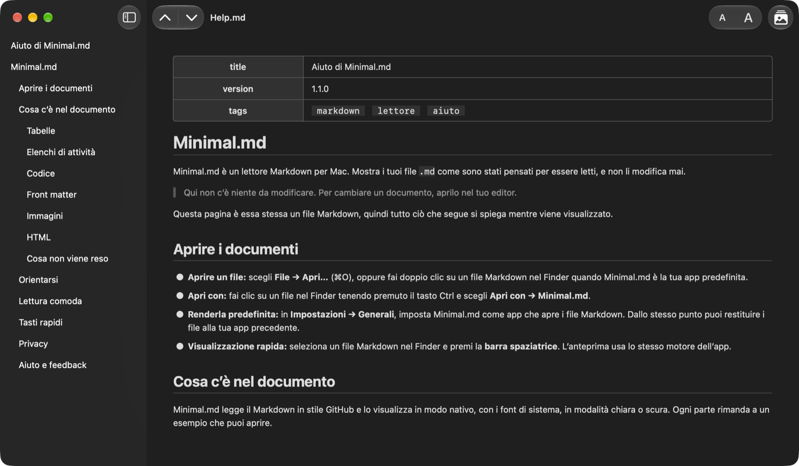

Lettore Markdown & anteprime
Apri un file Markdown e leggilo, semplicemente.
Minimal.md apre i file .md che scrivi tu e i tuoi agenti IA, e li mostra come sono stati pensati per essere letti, senza mai modificarli.

Funzioni
Nessun editor, nessuna sincronizzazione, nessun account.
Il documento reso in modo nativo con i font di sistema, in modalità chiara o scura.
Leggere, non modificare
Minimal.md non scrive mai nei tuoi file. Apri i file Markdown dal Finder o con Apri con, oppure rendila la tua app predefinita per Markdown in Impostazioni → Generali.
Lavora con i tuoi agenti IA
Segue il file in tempo reale mentre l’agente lo scrive.
Non entra mai in conflitto con un agente che modifica lo stesso file.
Visualizzazione rapida
Seleziona un file Markdown nel Finder e premi la barra spaziatrice per leggerlo reso, senza aprire l’app.
Privato per scelta
Nessuna connessione di rete, nessun dato raccolto, e le immagini remote non vengono mai caricate. Legge solo i file che apri e le cartelle che condividi.
Screenshot
Uno sguardo da vicino.
Lettura
Pensato per la lettura.
macOS nativo, con le abbreviazioni che ti aspetti.
Indice
La barra laterale elenca i titoli del documento.
Fai clic su uno per raggiungerlo.
⌃⌘S
Titolo per titolo
Vai al titolo precedente o successivo con le frecce della barra degli strumenti.
Vai all’inizio o alla fine del documento.
⌘↑ ⌘↓ ⌥⌘↑ ⌥⌘↓
Link che funzionano
Un link a un titolo lo raggiunge.
Un link a un altro file Markdown lo apre.
I link web si aprono nel tuo browser.
Comfort
Ingrandisci o riduci il testo dalla barra degli strumenti: tutte le finestre e Visualizzazione rapida si adeguano.
Chiaro o scuro: Minimal.md segue l’aspetto del tuo Mac.
⌘+ ⌘− ⌘0
Immagini
Le immagini salvate accanto al documento appaiono al loro posto.
Le immagini web non vengono mai caricate: vedi un segnaposto con la descrizione dell’immagine, non un vuoto.
⌥⌘L
Contesto
Seleziona del testo per tutto ciò che offre macOS: Cerca, Traduci, Strumenti di scrittura e Servizi.
Ti serve tutto il testo? Composizione → Copia documento come Markdown copia l’intera sorgente.
⇧⌘C
Etichette dell’App Store
Privacy e accessibilità.
Funzioni supportate su Mac
- VoiceOver
- Controllo vocale
- Interfaccia scura
- Differenzia non solo con il colore
- Contrasto sufficiente
- Movimento ridotto
Lingue
- Inglese
- Francese
- Tedesco
- Italiano
- Russo
- Spagnolo
Vuoi Minimal.md nella tua lingua? Faccelo sapere.
Novità
Scopri cosa è cambiato in ogni versione nel registro delle modifiche (in inglese).
Beta pubblica
Vuoi le nuove build in anteprima? Partecipa alla beta (in inglese).